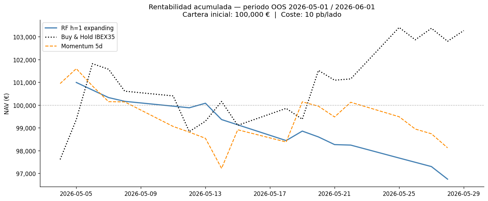

En el día de hoy, el precio del activo
{(sube,baja) -> (comprar,vender)} con
probabilidad asociada p ∈ [0,1].
Interpretación (p): Se suele situar alrededor
del 0.5; cuánto más diverge de ese valor, mayor confianza tiene el
modelo en la direccionalidad de la señal. Las probabilidades no
están calibradas.

El rendimiento pasado no es indicativo de resultados futuros. Las inversiones implican riesgos, incluida la posible pérdida del capital invertido. Las predicciones son estimaciones y no constituyen asesoramiento financiero. Actúa bajo tu propia responsabilidad.